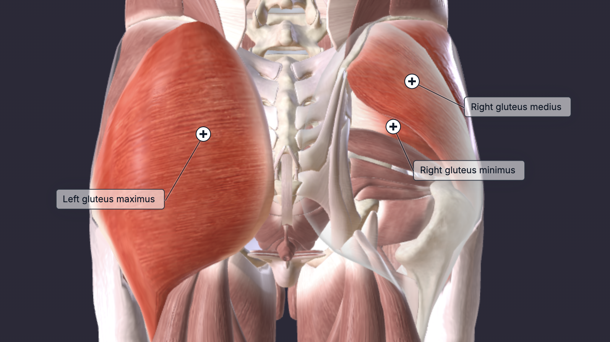

The glutes, or gluteal muscles, are a group of three muscles that form the buttocks: the gluteus maximus, gluteus medius, and gluteus minimus. These muscles do not have distinct heads like some upper-body muscles, but they are often described by different fiber regions (anterior, middle, and posterior fibers) that influence their function. The main functions of the gluteal muscles include hip extension, lateral (external) rotation of the hip, hip abduction, and stabilization of the pelvis, while also helping to maintain an erect posture. They play an important role in lower-body movements such as walking, running, climbing, and standing up from a bent position.
The glutes should be hit in a contracted and stretched position.
Pick one exercise from each list and do 2-3 sets per exercise based on preference.
